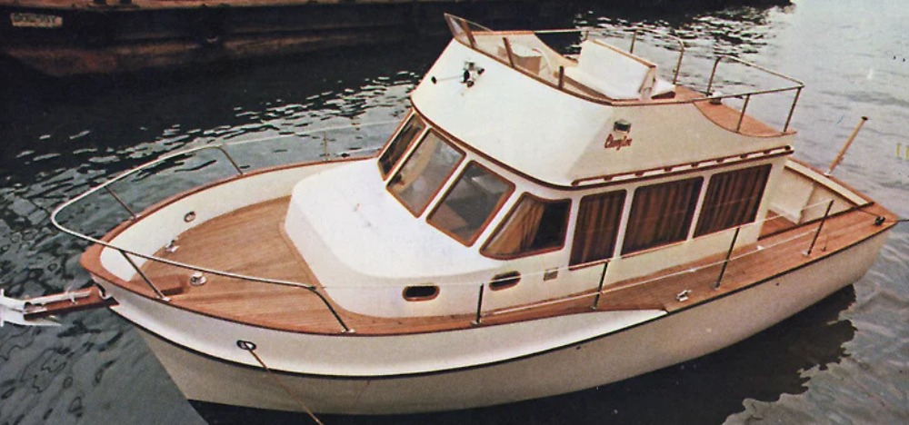

B-Atlas Boat Guide · CHLY-32
Cheoy Lee 32 Trawler Trawler
1977–1986
The Cheoy Lee 32 Trawler is a Hong Kong-built traditional cruising powerboat from Cheoy Lee's classic trawler period. Heavy fiberglass construction, teak joinery, protected running gear and displacement-oriented operation define the family, while layout and machinery differ materially by model.

- LOA
- 31.92 ft
- LWL
- 29.5 ft
- Beam
- 12 ft
- Draft
- 4.42 ft
- Hull behaviour
- Semi-Displacement
- Fuel
- Diesel
- Propulsion
- Shaft
- Engine configuration
- Single Ford Lehman 120 hp diesel commonly documented
- Boat family
- Trawler
- Construction
- Fiberglass
Best for
- Couples seeking a traditional wood-rich cruising boat
- Owners comfortable maintaining older teak-intensive yachts
- Low-speed inland and coastal cruising
Trade-offs
- Exterior teak and older deck/window systems can demand substantial upkeep
- Heavy displacement and low-speed mission limit performance
- Age, yard practices and owner modifications create significant hull-to-hull variation
Known concerns
- No model-specific concern has been promoted to B-Atlas’s evidence threshold. This does not mean the model has no age-, condition- or hull-specific risks.
Inspection focus
- Confirm exact model identity and build year from hull documentation
- Inspect teak decks, cabin-top penetrations, windows and trim for moisture intrusion
- Inspect fuel/water tanks, wiring, plumbing and owner modifications
- Inspect engine cooling, exhaust, mounts, shaft, rudder and keel/skeg
- Verify flybridge, mast and air-draft configuration for intended routes
Continue researching
Related boat models
Cheoy Lee 35 Trawler Trawler
34.92 ft · Semi-Displacement
Cheoy Lee 28 Sedan Trawler Sedan
27.92 ft · Semi-Displacement
Cheoy Lee 36 Trawler Trawler
36 ft · Semi-Displacement
Grand Banks 32 Sedan
31.92 ft · Semi-Displacement
Transpacific Marine Eagle 32 Pilothouse
32 ft · Displacement
Island Gypsy 32 Europa Europa
32 ft · Semi-Displacement
About this record
B-Atlas preserves uncertainty: missing information remains unknown rather than being treated as a negative. Specifications and guidance describe the model record; individual boats can differ by year, equipment, refit and condition.